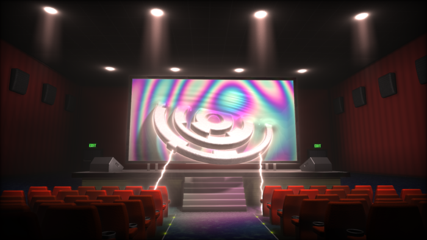

I’ve been watching graphics demos for many years now, and never thought that one day I’d actually make one myself. But this year I finally plucked up enough courage to create an entry for the awesome Revision 2022 competition.
I figured the best category for me would be ‘4Kb Executable Graphics’. The challenge is to write a single executable in less than 4096 bytes (which is tiny!) which produces a single static image.
To put this into perspective, if you were to take a screenshot of the image it would come in at over 6,000,000 bytes. So the code that creates the image must be over 1,500 times smaller than the image itself!
As frame rate is not a problem here I had to use different techniques to make this image – I actually only get 2 FPS on my machine!
Instead of performance I had to keep in mind code compressibility. That means firstly writing a small amount of code (obviously), and secondly reusing terms so the data compressor can do a better job of compressing.
I came in 8th place, which I’m extremely happy with. It was awesome to compete with such great coders!
The GLSL shader source can be found here.